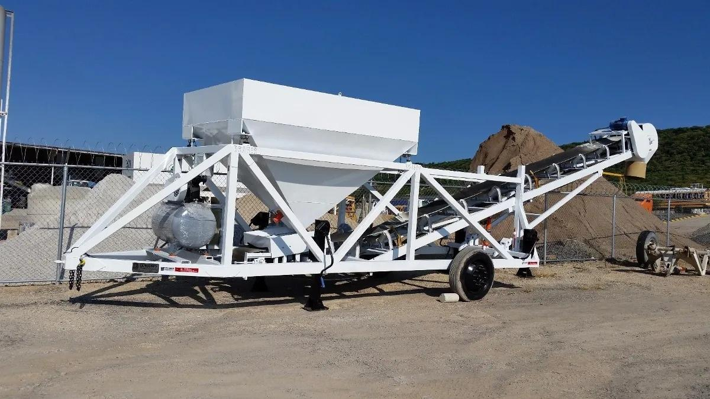
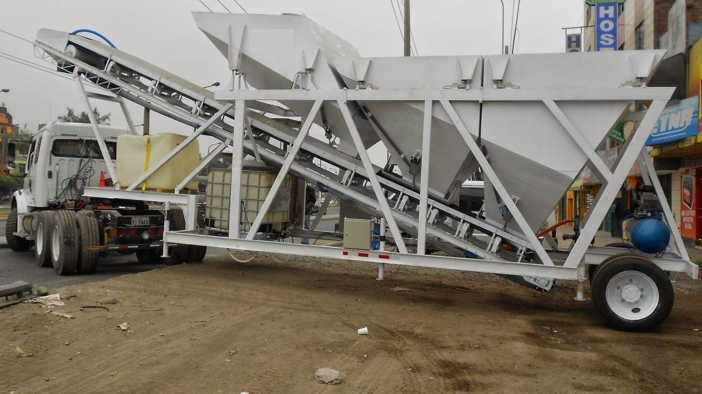
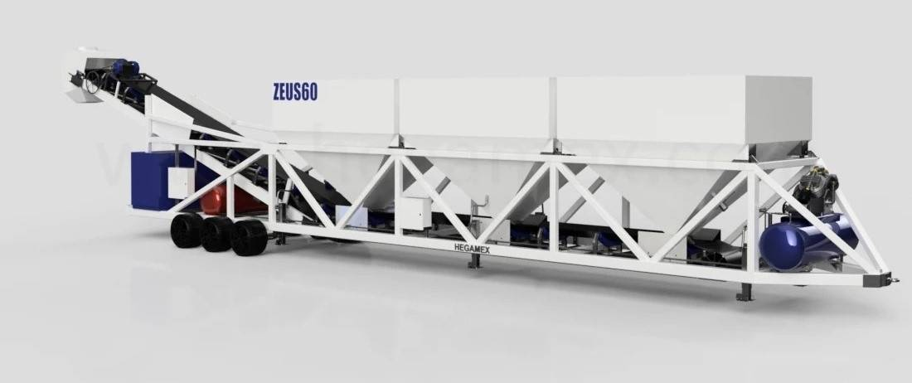

Ventajas de nuestras dosificadoras
- Instalación rápida y sencilla (solo 1-2 días)
- Transporte terrestre económico
- Instalación en un espacio reducido
- Mantenimiento fácil y costes operativos bajos
- Remplaso de faja por Tornillo sin fin
- Reubicación rápida y sencilla
- Facilidad de configuración
- Coste mínimo del cimiento de hormigón
- Sistema de automatización optimizado
- Poca perdida de material
Dosificadora de una tolva
 |
| Capacidad |
32 m3/h |
| Capacidad de tolva |
9 m3 |
| Pesaje de Cemento |
Si |
| Compresor |
Incluido |
| Tornillo Sinfin |
40cm |
| Cabina de operador |
Incluido(no) |
Dosificadora de dos tolvas
 |
| Capacidad |
40 m3/h |
| Dos tolvas de: |
9 m3 |
| Pesaje de Cemento |
Si |
| Compresor |
Incluido |
| Tornillo Sinfin |
40cm |
| Cabina de operador |
Incluido(no) |
Dosificadora de tres tolvas
 |
| Capacidad |
48 m3/h |
| Tres tolvas de: |
9 m3 |
| Pesaje de Cemento |
Si |
| Compresor |
Incluido |
| Tornillo Sinfin |
40cm |
| Cabina de operador |
Incluido |